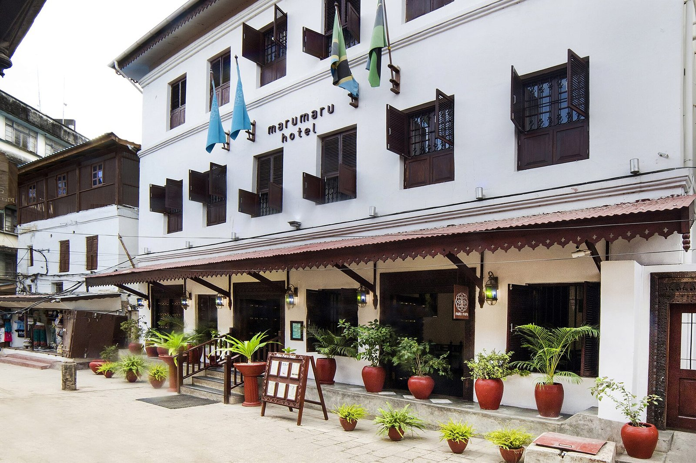

Photograph: Beneath the River of Cloud - Serengeti by Eric Kilby, via Wikimedia Commons, CC BY-SA 2.0
East Africa knows how wet this season will be. It does not know what its cover is worth.
Kenya's state reinsurer went shopping for a catastrophe model last Thursday, days before the start of a short rains season that forecasters have already compared to 1997 and 2023. For lodges and coastal hotels, the exposure that matters this quarter is not the water. It is the wording.
Last Thursday, with October a week away, Kenya Reinsurance Corporation invited bids from modelling firms to map its exposure to floods and earthquakes across East Africa, and to work out how that exposure might translate into losses. The state-owned reinsurer sits behind a large share of the property cover written in Kenya, Uganda and Tanzania. It was, in effect, publishing a notice that it does not yet know the answer.
The timing is the story. Five weeks earlier, on 18 August, the Climate Prediction and Applications Centre run by IGAD, the regional bloc that groups Kenya, Uganda, Tanzania and six neighbours, had already told the region what was coming. Its October to December outlook put the probability of enhanced rainfall at 90 per cent over southern Ethiopia, central and southern Somalia and north-eastern Kenya, with seasonal totals likely to exceed 400mm across central Kenya, the Lake Victoria basin, Burundi, western Rwanda and western Tanzania. Onset would be early to normal across most of Tanzania and central-eastern Kenya. The drivers were a strengthening El Niño and a positive Indian Ocean Dipole. The forum named its analogue years: 1997 and 2023.
Anyone who has run a camp in the Mara or a beach property south of Mombasa knows what those two years mean. The Kenya Meteorological Service followed with an outlook putting above-average rainfall over roughly 80 per cent of the country. In Zanzibar, where the Vuli rains land on an island whose entire high season begins in December, the Disaster Management Commission identified 75 vulnerable administrative areas and 105 buildings in poor condition in Stone Town, 27 of them needing urgent attention, with November expected to be the heaviest month. President Hussein Mwinyi ordered drains cleared and told residents in the worst zones to move before the rain intensified.
So the meteorology is not the uncertainty. It has been published, in public, for more than a month, by the region's own institutions. The uncertainty is contractual, and it sits inside policy documents that most East African hospitality operators have not opened since they renewed.
Consider what actually happened the last time this region got the season it is now being promised. On 4 May 2024, the Mara Managers Association issued a statement describing camps and lodges near the Mara, Talek and Sand rivers as partially or fully submerged. Three bridges were impassable: Talek gate, Mara Simba and Mara Rianta. The Mara bridge itself was destroyed. "All tourists were safely evacuated from camps and lodges where needed," Samwel Leposo, the county's chief officer for tourism, said at the time, and that was true and was the only comfortable sentence in the document. The Standard reported that twelve tented camps and lodges had been destroyed.
Read that list again as an insurance problem rather than a weather one. A submerged tent is physical damage at the insured premises, which is the simplest claim a property policy handles. A destroyed public bridge fourteen kilometres away is not. It closes the camp just as completely, it cancels the same bookings, it strands the same guests, and under the standard wording of most property and business interruption policies sold in the region it triggers nothing at all, because nothing at the insured location was damaged. Business interruption cover in its ordinary form responds to the consequences of an insured physical loss at the premises. Loss of access caused by damage to someone else's infrastructure requires a specific extension, usually capped, usually with a distance limit, and usually not bought.
That is the first gap. The second is slower and more corrosive.
Kenya's Insurance Regulatory Authority counted more than 850 flood claims worth KSh3.145 billion by the end of April 2024, a figure that rose 62 per cent to around KSh5 billion by June. Nairobi accounted for 673 of those claims and KSh2.7 billion of the value. By the end of April, the amount actually settled stood at KSh147.3 million. That is under five per cent of what had been claimed by then. Every camp manager who has ever been told that cover is in place should sit with that ratio for a moment. Cover existing and cover paying are separate events, and in the 2024 season they were separated by a great deal of time.
What fills that gap is argument, and the Kenyan market's record on contested large claims is not reassuring. On 15 September, Business Daily set out the case of Mombasa Cement against Kenindia Insurance over a blending silo that collapsed on 1 August 2011. The insurer declined. The dispute ran for fifteen years. The claim, lodged at KSh1.64 billion, was eventually settled by the courts at KSh4.2 billion. The company won. It also spent fifteen years winning, which no seasonal lodge with a bank facility and a December payroll can do.
Individual disputes like that one stall for years. The national bill does not wait for them to resolve. The scale of what is at stake is no longer in dispute. The National Treasury's Disaster Risk Financing Strategy 2026 to 2030 puts total damages and losses from the October to December 2023 and March to May 2024 floods at KSh187.82 billion. Kenya's own 2026 flood season, which ran from March into April, killed 112 people across thirty counties and displaced almost 35,000 before this year's short rains had even been forecast. The insurers have felt it directly. "We had floods last year and into this year in the first quarter. Last year, we paid over KSh200 million worth of flood-related claims," Japheth Ogalloh, managing director of Old Mutual, said in May. "In general, risks related to climate change are becoming more frequent and severe."
The industry's response so far has been to talk about structure rather than price. Kenya Re has publicly argued for a national flood pool bringing together the reinsurer, direct insurers, government and capital markets, with the state carrying the extreme tail. That is a sensible idea and it will not exist this quarter. Neither will the catastrophe model the corporation went to tender for last week. Procurement, data assembly and calibration for a multi-country flood and seismic model is a matter of many months. The season starts next week.
Which means the 2026 short rains will be underwritten the way the last ones were: on judgement, memory and treaty capacity set somewhere else. For a lodge owner that has one practical consequence. The pricing of your cover this year does not reflect the forecast, because nobody in the chain has a model that ingests it. That cuts both ways. It means you are unlikely to be surcharged for a season the forum has already called. It also means the insurer has not stress-tested what happens if every camp on three rivers claims in the same fortnight, and aggregate catastrophe limits are where that arithmetic shows up.
Jared Kangwana, managing partner in Kenya at Clyde & Co, put the point more precisely than any broker's circular this month, writing with his colleagues Esther Boyani and Lucy Mwaniki on 16 September. "The best time to discover an ambiguity in a flood definition, an inadequate catastrophe limit or a gap between insurance and reinsurance coverage is before the rains arrive," they wrote. The three ambiguities they name are exactly the three that decide whether an East African property is insured or merely holding a document. Does the policy's flood definition cover rising surface water as well as the overflow of a watercourse? Is the catastrophe limit set per location or aggregated across every camp in the group, and if aggregated, at what number? And does the local insurer's own reinsurance treaty stretch far enough that a regional event does not turn into a negotiation about what it can afford?
There is a longer-run version of this that owners should see coming. Climate exposure has already begun to function as a capital gate in African hospitality, not merely a cost line. "The IFC, for example, will not lend unless a project is green-compliant," Trevor Ward, managing director of W Hospitality Group, noted in April. "Insurance companies will assess the risks involved in complying or not complying and may not provide cover." Judy Kepher-Gona, founder of the Sustainable Travel and Tourism Agenda, framed the same shift in terms of who gets to own the assets. "Climate is increasingly becoming a barrier to local ownership," she said, pointing to certification, carbon assessment and de-risking requirements that reward developers with balance sheets deep enough to absorb them. A season that produces contested claims across the Mara, the Lake basin and the coast will accelerate that sorting, because the properties that cannot demonstrate resilience are the ones that will be quoted out of cover first.
None of this argues for pessimism about the quarter. Coastal bookings held through the early September rains, and the region has traded through worse. It argues for a fortnight of unglamorous work, and the list is short enough to finish before the ground softens:
Photograph and date the condition of every structure, bund, culvert and access road now, because the pre-loss baseline is what a loss adjuster will ask for and what nobody ever has.
Read the business interruption section and find out whether denial of access, damage to someone else's infrastructure that cuts off your own guests, is actually in it.
Ask the broker, in writing, for the aggregate catastrophe limit across the whole portfolio, not the per-property sum insured, so a shared-river event does not exhaust cover camp by camp.
Ask what the flood definition says: whether it covers rising surface water as well as the overflow of a watercourse, in those exact words.
Kenya Re will get its model. The forecast that model would have validated is already public, and it has been public since August. The gap between those two facts is where this season's losses will be argued, and the operators who close it will do so in the next two weeks, with a policy document and a pen, not after the water arrives.
📣 Telegram 💬 WhatsApp 💼 LinkedIn 📚 All guides